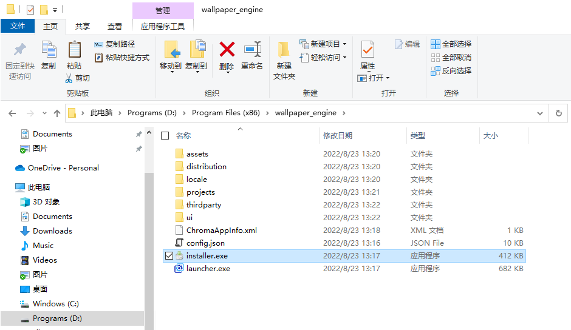
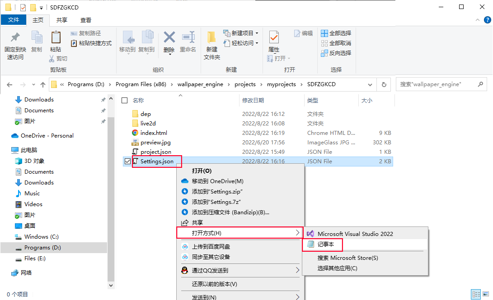

湖南师大附中高考倒计时壁纸 使用说明
目录
这是什么？
湖南师大附中高考倒计时壁纸 (SDFZGKCD) - 来自 G2108 李叙廷 (Ritel Takajun)
当前最新版本 v7.3
点击在线预览高考的日子一天天逼近，但你却毫无实感？想知道高考到底还有多么遥远？你需要这样一个高考倒计时。
它具有经精心设计的美观页面、精准无误的时钟与倒计时、堪称智能的电子课表、实时更新的天气预报、以及可爱有趣的 Live2D 看板娘，让你在紧张的学业中获得更便捷的体验，以及拥有愉快的心情。
同时，你也不用拘泥于高考倒计时。你可以轻松地将其自定义为任何倒计时。
欢迎下载体验 SDFZGKCD。 ↓
极力欢迎大家在全校范围内广泛推荐和传播。
阅读之前：扫除阅读障碍
在使用者调查时我发现，无论是第一次使用的人，还是有所知晓的人，都可能出现阅读障碍。
这可能是因为我没有足够的精力去调整排版使该教程更易读，导致阅读障碍增多。以下是一些减少阅读障碍的建议：
教程的每一步都写得很清楚，请耐心阅读，认清每一句的句意。
不要主观臆断、画蛇添足；不要盲目跳读，即使你有所了解。
顺利情况下，阅读该教程并完成设置仅需不到 5 分钟。
下载该壁纸和 Wallpaper Engine
还未拥有 Wallpaper Engine ？请在上方链接里下载 wallpaper_engine.zip
• 如何配置和使用该软件？ 点击前往 使用 Wallpaper Engine
已经拥有而无需下载 Wallpaper Engine ? 在上方链接里下载 SDFZGKCD.zip 即可
• 如何个性化设置该壁纸？ 点击前往 设置 SDFZGKCD
更新指南
任意旧版本 → v7.3+ :
新学年，新启动。请删除全部文件并重新配置 SDFZGKCD；也可以删除并更新 Wallpaper Engine，但这不重要。
最近更新
v7.3 更新说明：
•新学年，新启动：优化依赖文件结构。其中，将原 Properties.json 更名为 Settings.json 。
•多语言星期改为使用缩写
•修补了一个小 bug
v7.2 更新说明：
•增加设置背景图片功能（请使用暗色背景，否则很难看）。
•修复一个小 bug
v7.1 更新说明：
•微调页面布局
•修复一个小 bug
v7.0 重大更新 更新说明：
•大幅优化代码结构
•调整页面布局
•优化分辨率适配
•增加 Live2D 看板娘 开关
由于高考临近，作者学业繁重，今后若有非重大更新恕不另行通知。
使用 Wallpaper Engine
• 注意：建议在电脑显示设置中将缩放调至100%以获得该壁纸的最佳体验。（对于学校电脑，这也是日常使用的最佳设置。）
将 wallpaper_engine.zip 下载下来之后，将其解压并放到一个合适的位置。我推荐 "D:\Program Files (x86)\"。当然，放在任何你喜欢的地方也可以。如图。
一定要放在一个合适的位置。我建议在第一次使用之后就不要再更改它的位置了。
确定好了之后，双击上图中的 launcher.exe 运行程序。你可以建立一个 launcher.exe 的快捷方式，放在桌面或其他地方，方便日后使用。
短暂的初始化过后，Wallpaper Engine 启动了。如图。
其中可能会显示 Default (English)，但这无关紧要，点开下拉菜单，选择 Simplified Chinese (简体中文) 即可。
下面是推荐设置。(其实默认设置也就是这样的，点击下一步即可。)
LED 效果是没有用的，因为你没有连接支持的彩色灯光.
自动启动的 设置高优先级 能让开机时壁纸启动的更快，点不点都可以。
接下来点击界面右上角的 设置
将下图几项改为“保持运行”。（如果选择暂停，在使用希沃白板的画笔的时候壁纸可能会暂停。）
一切准备就绪之后，在界面中点击“附中高考倒计时壁纸”就可以启动壁纸了！
另外，我没有删除官方自带的一些壁纸。你可以通过上方“筛选结果” - 来源 - 取消勾选 ”官方“ 来隐藏它们。
你可以双击右下角 Wallpaper Engine 托盘图标打开选择壁纸界面，或者右键并点击“选择壁纸”。
注意：因不明原因，第一次设置时开机启动可能不会生效，你可以打开设置取消并重新勾选开机启动，或者点击“设置高优先级”。
设置 SDFZGKCD
如果你还没有把壁纸导入 Wallpaper Engine（在上面下载的 wallpaper_engine.zip 里会自带，请跳过这一句话），打开软件所在文件夹，依次进入 projects\myprojects 文件夹，将壁纸文件夹放入此文件夹，如图。
如果已经拥有该壁纸，那么就在软件页面右键单击该壁纸，点击“在资源管理器中打开”（或者找到上图路径也可以）。
使用记事本打开 Settings.json 。（如果你有其他的编辑器也可以。）
该文件内容以及说明如图。
注意：更改属性时，请不要增减其他符号，否则会导致错误。
建议课表里每节课的名称都是两个字，以保持整齐美观。
请保持上下课时间的第一个时间为 00:00，下课时间的最后一个为 24:00，并且不要删减或改变时间的顺序。
请将要设置的背景图片文件放入同一文件夹中，将其文件名（带上后缀）写入 "background_image" 属性，如 "我的壁纸.jpg"。
修改完成后请保存。壁纸将在 8 秒内自动更新你更改的数据。
• Live2D 看板娘的注意事项：由于网络原因，有时可能会出现加载不出来的情况，可重启壁纸（换成其他壁纸再换回来）以重新加载；在使用触屏点击时，她本身和她旁边的几个按钮可能需要双击才能起作用。
一切就绪，请尽情享受吧！
关于 SDFZGKCD
由 湖南师范大学附属中学 G2108 李叙廷 (Ritel Takajun) 制作
联系作者
QQ: 1356173200
Email: little_down@outlook.com
Github: Ritel Takajun
Twitter: @Ritel_Takajun
Personal Website: https://little-down.github.io/
使用说明 & 在线预览: https://little-down.github.io/SDFZGKCD
除以下引用外，本壁纸由本作者完全自制。
天气插件引用 和风天气。
Live2D 使用 fghrsh/live2d_demo ，本作者进行过二次修改。
壁纸播放工具：Wallpaper Engine（Steam 版）。请支持正版。
感谢所有为此壁纸的诞生和传播提供过帮助和支持的热心人士！
湖南师范大学附属中学全体师生 具有本网页/壁纸的 使用权。
其他组织/个人需使用/修改请先联系作者，本作者或许可以给你提供帮助。
注：对 Properties.json 的修改属于使用而非修改。
© 2021 - 2022 保留所有权利。
博采众议 & 招贤纳士
欢迎提出使用问题、功能建议、界面设计建议等各种建议或意见，我将感激不尽！
我们缺乏灵感。我们需要实用的新功能。我们需要赏心悦目的美学设计。你的每一句话都造就改变！
如果你是有能力者，并且有意为此壁纸的发展贡献力量，请联系我。合作造就进步。